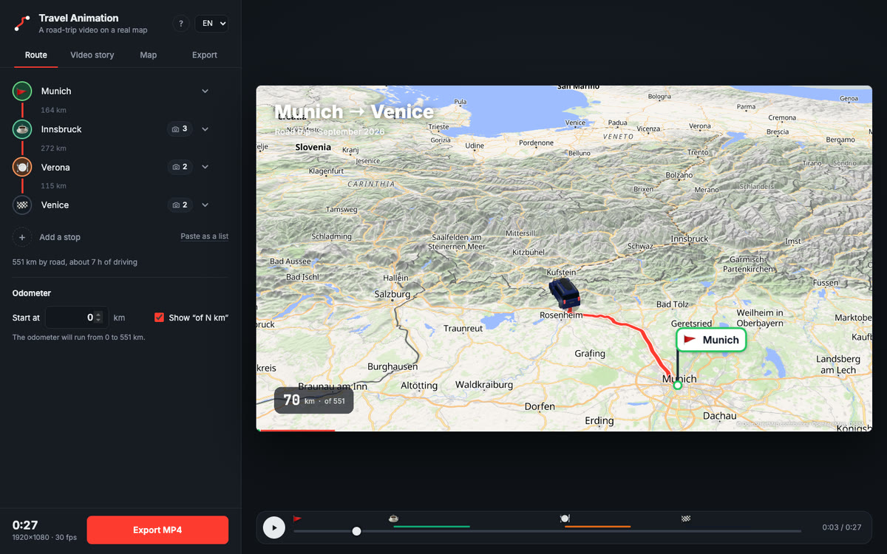
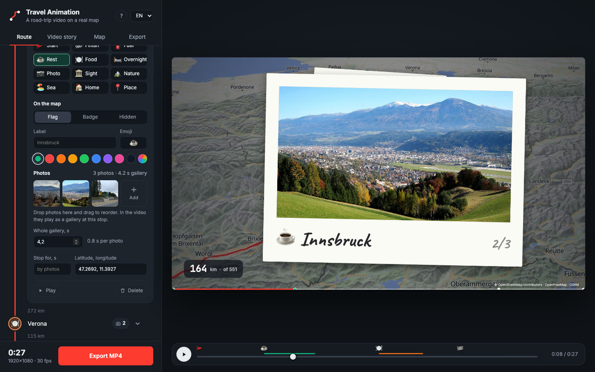
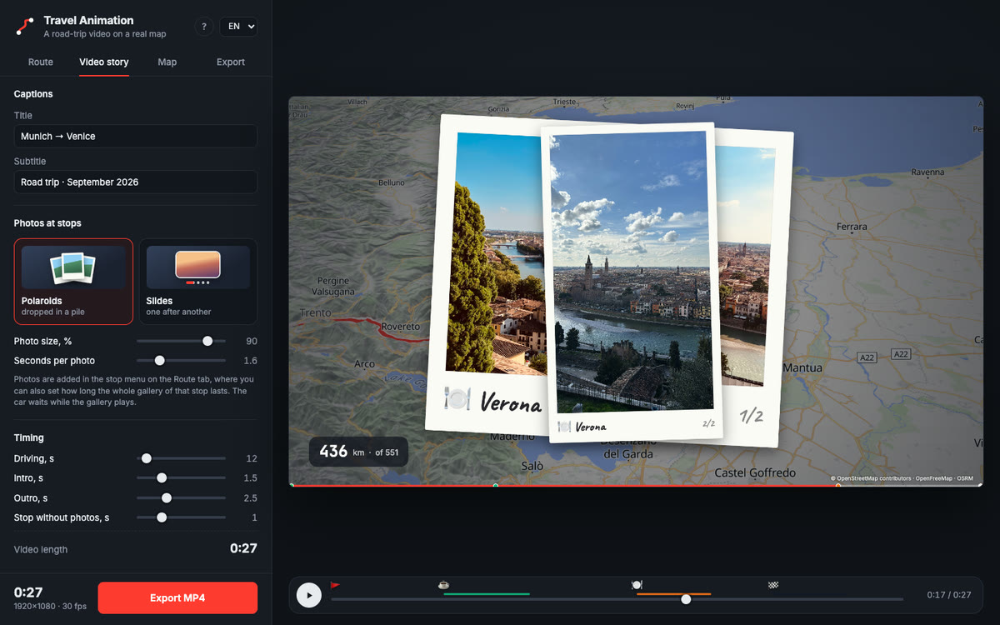
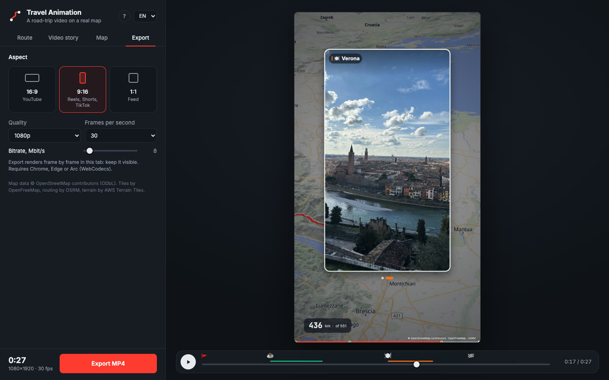

Turn your road trip into an animated map video
Travel Animation draws your route along real roads on a 3D map, drives a car from stop to stop, plays your photos at each stop and exports an MP4 ready for Reels, TikTok or YouTube.
Free, in the browser, no sign-up.
Works in Chrome, Edge and Arc on a computer.
- No watermark
- Up to 4K, 60 fps
- Photos stay on your computer
- Open source
How to make a video
Four steps, about ten minutes. Everything is saved in your browser, so you can close the tab and come back later.
-
Add your stops
Type a city or an address and press Enter. The route is built along real roads, and the distance between stops appears on the route line.
Drag a stop by its handle to change the order. Need a quick start? Paste the whole list at once with “Paste as a list”.

-
Style stops and add photos
Open a stop to choose its type — fuel, rest, food, overnight, sights, nature, sea — and how it looks on the map: a flag with a label, a round badge, or hidden.
Drop photos onto the stop. iPhone HEIC photos work too. “Whole gallery, s” sets how long they play: seven photos in four seconds flip by quickly.

-
Set up the story
Choose how galleries look: polaroids dropping into a pile or slides with a crossfade. Adjust photo size, seconds per photo, captions and timing.
Continuing a longer trip? Set the odometer to start at, say, 2,500 km.

-
Export MP4
Pick 16:9, 9:16 or 1:1 and the quality up to 4K. The video renders frame by frame right in the tab and is saved to Downloads.
Keep the tab visible while it renders: browsers pause background tabs.

What ends up in the video
The preview is exactly what gets exported: every frame is computed from time, so nothing is lost or skipped.
- A real route
- The road is built by OSRM from OpenStreetMap data. The travelled part glows, the road ahead is dashed.
- A car that follows the road
- A 3D hatchback or your own image. The camera turns with the road, slows down into stops and pulls back to an overview at the end.
- Terrain
- Hillshade and 3D mountains with adjustable height, sky at the horizon when the camera is tilted.
- Stops with character
- Flags or badges with emoji and your own labels and colors pop up as the car arrives.
- Photo galleries
- Photos fly out of the stop flag, flip by as polaroids or slides and fly back before the car drives on.
- Titles and odometer
- Title, subtitle, a running kilometre counter from any starting value and a progress bar with stop marks.
One trip, every platform
Export the same trip in the shape each platform expects, at 720p, 1080p or 4K and 30 or 60 fps.
Questions
Is it really free?
Yes. There is no subscription, no watermark and no account. The code is open source under the MIT license, so anyone can use it, change it or host their own copy.
Are my photos uploaded anywhere?
No. Photos are downscaled and stored in your browser on your computer. Only stop names go to the Nominatim geocoder and coordinates to the OSRM routing service.
Which browser do I need?
Chrome, Edge or Arc on a computer. The video is encoded with WebCodecs right in the browser, and export is tested in these browsers.
How long does export take?
It depends on the length, quality and your internet speed, because every frame waits for map tiles. A 30-second 1080p video usually takes a few minutes.
Can I make a vertical video for Reels or TikTok?
Yes. Choose 9:16 on the Export tab. Photos in galleries are automatically sized for a vertical frame.
Can the odometer continue from the previous part of the trip?
Yes. Set “Start at” on the Route tab, for example 2500, and the counter in the video runs from there. The “of N km” label can be turned off.
Is it an alternative to TravelBoast, Mult.dev or Travel Animator?
It makes the same kind of video — an animated route on a map — for free: MP4 export up to 4K, no watermark, no account, and photo galleries at stops.